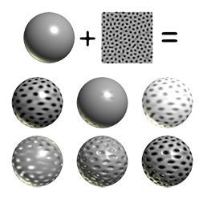
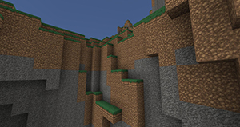

“Hi everybody, we’re team 2D|!2D (maybe draw it on the board for good measure) and we’re here to present on texture mapping and filtering; specifically bilinear and trilinear interpolation, mip-maps, and anisotropic filtering. To start with, we have speaker 1 to give a quick breakdown of texture mapping before we move into more specific use cases
Texture mapping, on a basic level, is a way to calculate color, shade, light, etc. for each pixel we by pasting images to our objects in order to create the illusion of realism. This allows us to have much more detailed graphics without having to sacrifice computation time. Something key to understand here is that we are mapping each point on the original texture (or texture coordinate system) to a point on the new image we’re trying to create. A good example of this would be if we’re trying to display a texture somewhere where the lighting in the environment rarely or never changes, we can precompute the texture so we don’t have to calculate individual bit values. Now, here’s speaker 2, to talk about linear interpolation and how it’s useful in texture filtering.
Interpolation is the estimation of a value based on other “nearby” values. It’s extremely useful in computer graphics because we can use it to choose how to both color and texturize a system of texels (we’ll get to that later) based on either a formula or a smaller resolution original map. To explain bilinear interpolation, let’s draw an example on the board. Say you have a pixel map and you want to increase the resolution of it, or “zoom in”, so to speak. To do this, we can define any new point we want to create based on the points around it. Here’s an equation, where u =
c(u, v) = (1−u’ )(1−v’ )cij+u’(1−v’ )c(i+1)j+(1−u’)v’ ci(j+1)+u’v’c(i+1)(j+1)
Bilinear Interpolation and Trilinear Interpolation are important concepts that are utilized for MIP-mapping. The letters "MIP" in the MIP mapping are an acronym of the Latin phrase multum in parvo, meaning "much in little". It is a texture mapping technique that utilizes multiple texture maps that each provides a deeper depth view level for the viewer as each one is half of the size of the first one. It is beneficial as it implements depth realism to objects but is costly in memory.